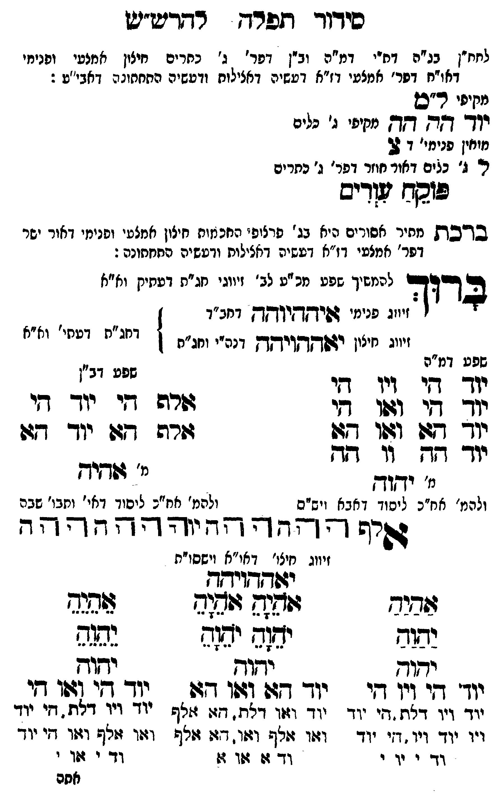

Neue Klartextfassung
[לחח"ן בג"ה דת"י דמ"ה וב"ן דפר' ג' כתרים חיצון אמצעי ופנימי דאו"ח דפר' אמצעי דז"א דעשיה דכללות ורביעיה התחתונה דאבי"ע:] [מקיפי ל"ם] יוד הה הה [מקיפי ג' כלים] [מוחין פנימי דצ'] צ ל ל' [ג' כלים דאור חוזר דפר' ג' כתרים] פוקח עורים ■ ברכת מתיר אסורים ■ [היא בג' פרצופי החכמות חיצון אמצעי ופנימי דאור ישר דפר' אמצעי דז"א דעשיה דכללות ורביעיה התחתונה:] ברוך [להמשיך שפע מכ"ע לב' זיווגי חג"ת דעתיק וא"א] [זיווג פנימי איההיוהה דחב"ד] [זיווג חיצון יאההויהה דכ"ח ותו"ח] [דחג"ת דעתי' וא"א] === טבלה === [טור ימין — שפע דמ"ה] יוד הי ויו הי יוד הי ואו הי יוד הא ואו הא יוד הה וו הה [מ' יהוה] [ולכת' חב"ד ליסוד דאבא ויש"ס] [טור שמאל — שפע דב"ן] אלף הי יוד הי אלף הא יוד הא [מ' אהיה] [ולכת' חב"ד ליסוד דאי' ותבו' שבה] === סוף טבלה === אלף ה הה ו וה יה יהוה הההה [זיווג חיצו' דאו"א וישסו"ת] יאההויהה === טבלה === [טור ימין] אַהַיַהַ יַהַוַהַ יהוה יוד הי ויו הי יוד ויו דלת, הי יוד ויו יוד ויו, הי יוד וד י וי י [טור אמצעי] אָהָיָהָ אָהָיָהָ יָהָוָהָ יָהָוָהָ יהוה יוד הא ואו הא יוד ואו דלת, הא אלף ואו אלף ואו, הא אלף וד א או א [טור שמאל] אֵהֵיֵהֵ יֵהֵוֵהֵ יהוה יוד הי ואו הי יוד ויו דלת, הי יוד ואו אלף ואו, הי יוד וד י או י === סוף טבלה ===
Original gegen neue OCR · Niqqud für Vergleich ausgeblendet
Original
[לחח"ן בג"ה דת"יK035-001 דמ"ה וב"ן דפר' ∅K035-002 ג' כתריםK035-003 חיצון אמצעיK035-004 ופנימי דאו"ח דפר' אמצעי דז"א דעשיה דכללות ורביעיה התחתונה דאבי"ע:] [מקיפי ל"ם] יוד הה הה [מקיפיK035-005 ג' כלים] [מוחין פנימי דצ'] צ ל ל' [ג'K035-006 כלים דאור חוזר דפר' ג' כתרים] פוקח עורים ■ ברכת מתירK035-007 אסורים ■ [היאK035-008 בג' פרצופי החכמותK035-009 חיצון אמצעיK035-010 ופנימי דאור ישר דפר' אמצעי דז"א דעשיה דכללות ורביעיה התחתונה:] ברוך [להמשיך שפע מכ"עK035-011 לב' זיווגי חג"ת דעתיק וא"א] [זיווגK035-012 פנימי איההיוהה דחב"ד] [זיווגK035-013 חיצון יאההויהה דכ"ח ותו"ח] [דחג"ת דעתי' וא"א] === טבלה === [טור ימין —K035-014 שפע דמ"ה]K035-015 יוד הי ויו הי יוד הי ואו הי יוד הא ואו הא יוד הה וו הה [מ' יהוה] [ולכת' חב"דK035-016 ליסוד דאבא ויש"ס] [טור שמאל — שפע דב"ן] אלף הי יוד הי אלף הא יוד הא [מ' אהיה] [ולכת' חב"דK035-017 ליסוד דאי' ותבו' שבה] === סוף טבלה === אלף ה הה ו וה יה יהוה הההה [זיווגK035-018 חיצו' דאו"א וישסו"ת] יאההויהה === טבלה === [טור ימין] אהיה יהוה יהוהK035-019 יוד הי ויו הי יוד ויו דלת, היK035-020 יוד ויו יוד ויו, היK035-021 יוד ודK035-022 י ויK035-023 י [טור אמצעי] אהיה אהיה יהוה יהוה יהוה יוד הא ואו הא יוד ואו דלת, הא אלף ואו אלף ואו, הא אלף וד א או א [טור שמאל] אהיה יהוה יהוה יוד הי ואו הי יוד ויו דלת, הי יוד ואו אלף ואו, הי יוד ודK035-024 י אוK035-025 י === סוף טבלה ===K035-026
OCR · fehlbar
סידוך תפרח דחדיש"יש לחח"ן בנ"ה דח"יK035-001 דמ"ה וב"ן דפר' -K035-002 ג' נחריםK035-003 חיצון אמנפיK035-004 ופנימי דאו"ח דפר' אמצעי דז"א דעשיה דאצילוח ודעשיה התחתוגה דאבי'יט : מקיפי ר"ס יודד דזדץ דזדז מקיפי נ' כלים מיחין פנימי' ו 2 ר.K035-005 ג' ∅K035-006 כלים דאור חוזר דפר' ג' כתרים פוסח ש ריס בגד"בק מהירK035-007 אסורים היאK035-008 בג' פרלופי החכ מוחK035-009 חיצון אמצטיK035-010 ופנימי דאור ישר דפר' אמצעי דז"א דטשיה דאצילות ודעשיה החחחונה: צל דוד להמשיך שפט מנ "עK035-011 לב' זיווגי חג"ת דעתיק וא"א זיווגK035-012 פנימי גפי אי"ךקק דחב"ד ויווגK035-013 חיצון ר[שאקךדוידךחק דנה"י וחג"ת וי"ח וכיזי' וז"אK035-014 שפע דמ"ה שפע דבי יוך קי ויו די י ד די וזלגו ףי שרה דיK035-015 יוד די יוךך 774 (זוך (-גו רוג -ד יו- דקש יוך ז -י' דזץ מ' נ' ידקוךץ 233 12 ולהמ' אח"כK035-016 ליסוד דאבא ויש"ס ולהמ' אח"כK035-017 ליסוד דאי' ותבו' שבה טיף דד דח ו- ו- - - 4 ד - זיווגK035-018 חיצו' דאי"א וישסו"ת יגפדזדשויחך (השיד וו(ח 4(שזף דגג ישוש ימ(ד ישזם גש ידוד יחוק - יחוד ייך' דשי וין דזי יך דבו וטו ד[ (וך די (זפן די יזד ויו דצת (זי' יודך יזד וזזו דלת. דו: וזלףK035-019 יוד ויג דלת . חיK035-020 יוד ויו יוד ויו. דזיK035-021 יוד וז:ו זלף ולו. דגו גזלן וצו זולף וז(ו די יוד דז-K035-022 י ידK035-023 י 7- 4: 2(ו ז: דד-K035-024 י זפךK035-025 י ל אסםK035-026